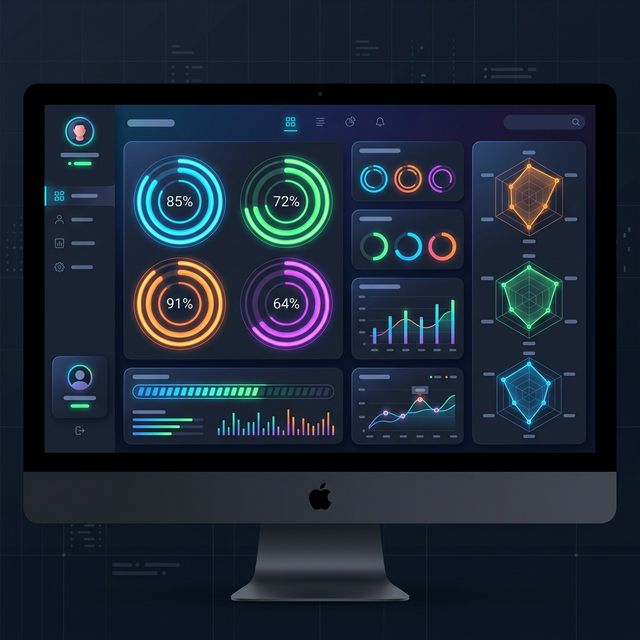
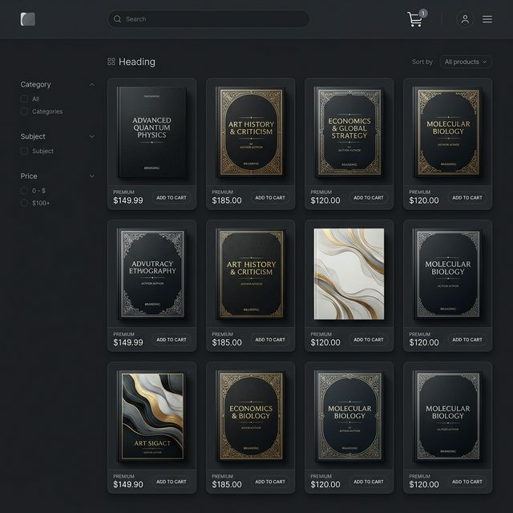
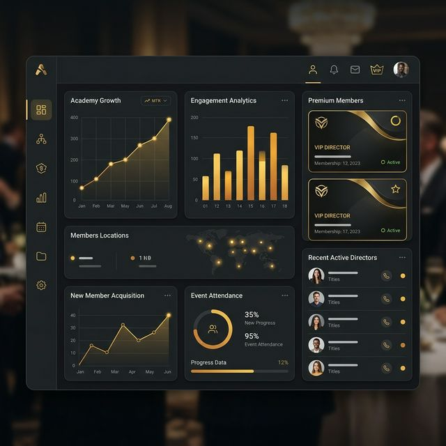

KNS BOOKS B2B Platform압도적인 상위 1% 기술,
압도적인 상위 1% 기술,
KATCH 통합 솔루션
KNS BOOKS가 자랑하는 6대 프리미엄 통합 평가 및 원생 관리 리소스 시스템입니다.
초격차를 만드는 체계적인 학원 운영 시스템을 귀원에 완벽하게 이식해 드립니다.
CORE 01
KATCH 기초 진단테스트
수강 전 강력한 약점 분석
대치동 최상위권 데이터베이스 10만 건을 바탕으로 학생의 취약점과 강점을 진단하는 최고수준의 평가 시스템입니다. 단순한 어휘 정답률에 그치지 않고, 어휘/구문 이해/추론 능력을 세밀하게 분석합니다.

CORE 02
KATCH 입학 레벨테스트
차원이 다른 반편성 기준
정규반 입학 커트라인을 판별하는 고도화된 레벨테스트입니다. OMR 스캔 기반의 빠르고 정확한 채점 시스템과 누적 백분위를 통해 학생을 가장 적합한 학습 반에 한 치의 오차 없이 배정합니다.
CORE 03
기출 & 내신 문제은행
클릭 몇 번으로 완성하는 시험지
수십만 문항의 기출 및 변형 문제 빅데이터 DB를 탑재했습니다. 강사가 원하는 교재별, 수능 유형별, 난이도별 상세 필터를 통해 완벽한 시험지를 조립하고 고품질 PDF로 즉시 출력합니다.
CORE 04
프리미엄 VOD 인강
공간의 제약이 없는 맞춤 직강
수능 앤솔로지 및 수단비 교재에 대한 4K 해설 강의를 비대면으로 제공합니다. 오답 지문만 골라서 효율적으로 학습할 수 있는 지능형 VOD 인덱스 플레이어를 지원합니다.
CORE 05
파트너스 전용 교재 스토어
간편 발주 및 실시간 배송 관리
KNS BOOKS 제휴 학원만을 위한 B2B 폐쇄몰입니다. 원생 수에 맞춰 간편하게 대량 주문하고, 파트너 특판 포인트 혜택을 실시간 적용받을 수 있습니다.

CORE 06
원장 전용 대시보드 (Lounge)
학원 운영 지표를 꿰뚫는 데이터
입퇴원 원생 지표, 레벨 테스트 평균, 강사별 VOD 수강률 등 학원 경영의 주요 지표를 시각화된 차트로 실시간 구독하는 최고급 데이터 애널리틱스 센터입니다.
